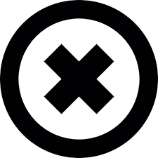

IRAM - Instituto Argentino de Normalización y Certificación
Metrología - Calidad de las Mediciones - Requisitos de las Normas Internacionales
ISO 9000 para Pymes- Introducción a las normas e Implementación
Formación de auditores Internos del sistema de la Calidad
Validación de Software de Laboratorio
Calidad en Laboratorios- Introducción a la Norma IRAM 301 (ISO/IEC 17025)
Formación de Auditores Internos de Sistemas de la Calidad en Laboratorios
